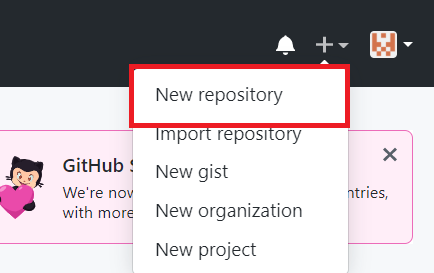
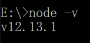
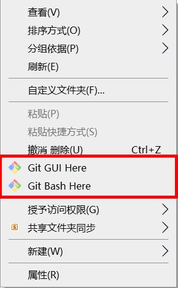
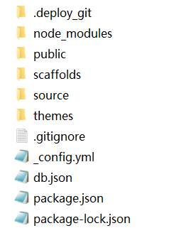
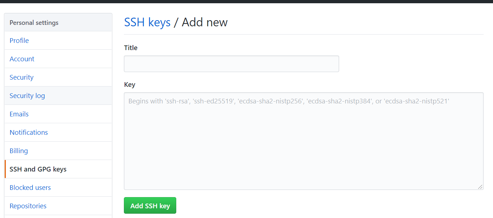

使用Hexo和GIthub建立自己的博客
引言
这是写的第一篇文章，也把我的过程大致描述了一下，我的系统是Win10，所以演示也是在Win10的环境下，但因为是弄完后才开始写的，所以中途一些安装的过程截图就没有了，可以去某度搜一搜，还是蛮多的。
这是我的参考文章，我大概是按着这样的路子走的：https://www.cnblogs.com/liuxianan/p/build-blog-website-by-hexo-github.html
使用工具
Github
首先我们要去Github的官网：https://github.com/ ，注册一个账号，然后创建一个仓库，位置如下图：
之后，我们开始创建仓库，按照下图的步骤：
NodeJS
之后，我们再来安装NodeJS，根据自己的系统，安装版本：https://nodejs.org/en
中途没有什么，想调安装位置就改一下，最后打开命令行，输入
node -v,就可以查看已安装的版本了Git
安装Git，去官网：https://git-scm.com/downloads/ , 下载，安装中途会有一些是否生成桌面图标，开始菜单图标，我是勾选了。然后一路默认就可以了。安装成功后，在资源管理器里右键，菜单里会多出两个选项，说明就是可以了：
Hexo
在某个盘下，创建一个文件夹名为“Hexo”，进去，右键，“Git bash here”，进入命令行，输入：
1
npm install -g hexo-cli
同样，你可以输入
hexo v来查看版本，然后在输入：1
hexo init
用来初始化此文件夹，可以看到此文件夹内的内容：
public文件夹里面是存储的最终网页文件，每个网页html，js，css等。
source文件夹用来原始原始数据，也就是你以后要写的博客，后缀为.md的markdown文件。
themes文件夹存储博客的主题文件，可以自己写，也可以去下别人已写好的，后续会讲到。
进阶配置
配置SSH
进入Git Bash，输入：
1
$ cd ~/. ssh #检查本机已存在的ssh密钥
如果提示：No such file or directory 说明你是第一次使用git。然后输入：
1
ssh-keygen -t rsa -C "邮件地址"
再按3次回车，会在C盘用户目录下生成一个”.ssh\id_rsa.pub”的文件，记事本打开并复制里面的内容，打开你的github主页，进入个人设置 -> SSH and GPG keys -> New SSH key：
其中Title可以给你的SSH起一个名字，Key则把你刚复制得到的SSH粘贴进去。
测试一下：
1 | $ ssh -T git@github.com |
然后输入yes，可以看到类似Hi ****，You’ve successfully authenticated, but GitHub does not provide shell access.就说明可以了，然后在配置一下用户名和邮箱：
1 | $ git config --global user.name ""// 双引号内填你的用户名 |
查看初始博客
进入Git Bash，输入：
1
2$ hexo g # 生成
$ hexo s # 启动服务然后就可以在浏览器中输入http://localhost:4000/ ,即可查看Hello World了，如果加载不出来，可能是端口号4000被占用了，换一个端口号（具体我还真不知道怎么换）。
部署到GitHub
进入Git Bash，输入：
1
2npm install hexo-deployer-git # 安装部署控件
hexo d #部署然后在地址栏中，输入 你的名字.github,io 就可以看到你的博客了。当然你还可以绑定你的域名，直接用你的域名来访问你的博客（怎么绑定还不会）
更改主题
Hexo提供了一些主题：https://hexo.io/themes/ ，找一个你喜欢的，然后下载。我下载的是https://github.com/Fechin/hexo-theme-diaspora/ ，根据这里面进行修改的。要注意的是，本身有一个 _config.yml文件，你下载的主题还会有一个 _config.yaml文件，改的时候不要弄混了。
当然，你还可以在这个主题上在修改，怎么修改就要看你的能力了。
撰写文章
回到Hexo根目录，启动Git Bash，输入：
1 | $ hexo new '***' #‘’里面输入文章名字 |
然后，在souce->_posts文件夹里就可以找到***.md的文件，打开，类似下面的内容：
1 | --- |
写好之后，hexo g，hexo d，即可。
常用命令介绍
1 | hexo new "postName" #新建文章 |
结语
待补充